宋徽厨案例解析在宋徽厨项目上，华与华通过将地方非遗文化深度融入品牌战略、空间设计、用餐体验与组织管理，帮助宋徽厨成功从一家区域性餐饮店，蜕变为安徽文化的餐饮代言人，实现了品牌价值与业绩增长的双重飞跃。1 、成了！“餐饮+文化”新范式一战而定；2 、创意引爆战略：品牌三角建立品牌壁垒；3 、创意品牌歌曲：“唱着歌就把钱赚了”；4 、最极简的徽派门头设计；5 、口号还是行动纲领，品牌文化与企业文化内外一体。
1成了！“餐饮+文化”新范式一战而定2024 年，宋徽厨与华与华携手启动品牌战略合作。华与华项目组在企业寻宝阶段，我们发现企业起源于安徽安庆，创始人也是安庆人，而宋徽厨的前身“江南田园”，早在2017 年引入黄梅戏现场驻唱表演。项目组根据企业资源禀赋，综合判断宋徽厨可以继续嫁接安庆黄梅戏这一文化母体，为品牌注入了独特的“文化 DNA ”，使其从千篇一律的“某菜馆”，升级为地域文化的餐饮代言人。
同时也能将物理层面的“餐饮菜品竞争”，升维至文化层面的“身份认同竞争”，从而共同构建竞争对手难以复制的 4 大差异化壁垒：1 、破解同质化困局：从“可替代品”到“文化地标”。地方文化是独特的地域基因，具有不可移植性。我们认为宋徽厨通过深度绑定黄梅戏，其品牌核心就拥有了天然的、基于地域文化根源的独特性。竞争对手可以模仿菜品、价格、服务流程，但难以模仿根植于特定地域文化母体、并被成功私有化的品牌资产，这形成了基于文化认同的深厚护城河。2 、降低三大成本：获客成本、信任成本、传播成本。1 ）降低获客成本：文化是天然的“流量密码”。本地人对家乡文化有强烈认同感（如安徽人听到黄梅戏），会自发选择承载文化的品牌；外地人寻求“地道体验”，文化餐厅成为必打卡点。2 ）降低信任成本：当品牌被视为地方文化的传承者，消费者潜意识认为其菜品更“正宗”、用料更“地道”、价值观更“可信”。3 ）降低传播成本：文化内容自带社交属性和传播力，嫁接知名文化符号，等于“寄生”于大众已有的认知和情感。消费者无需理解新概念，瞬间便能接收品牌信息。3 、建立深厚的情感连接与品牌忠诚度：文化连接能超越餐饮的功能属性，能触及消费者更深层的情感和文化认同，从而建立更牢固、更持久的品牌忠诚度。对于本地消费者，使用地方文化母体是对其身份认同的肯定和赞美，也能激发安徽人的地域自豪感和归属感，将品牌视为“自己人”。对于外地消费者，深度融入地方文化的餐饮体验，提供了超越“吃饱”的独特文化体验价值，满足了其“体验地道文化”的需求，留下深刻印象和美好回忆。4 、实现品牌资产的持续积累：当品牌成为地方文化的一个活跃载体和现代诠释者时，它就获得了超越商业周期的生命力。它的存在本身就在参与和丰富地方文化，从而赢得更广泛的社会认同和长久发展的根基。
持续投资于与地方文化母体深度绑定的超级符号、超级歌曲、品牌仪式等，就是在持续积累独特的、根植于文化基因的品牌资产，这种资产会随着时间推移不断增值。
阶段 2
创意引爆战略：品牌三角建立品牌壁垒
明确了“文化+餐饮”的战略核心，接下来要做的就是用创意引爆战略，建立强势品牌。华与华品牌战略起手式，就是“华与华品牌三角形”。品牌三角形的构建是一切品牌工作的起点，在此基础上构建品牌大厦，持续为品牌资产增产，每一年重复积累，最终实现企业的基业长青。建立品牌，先画品牌三角形。
超级符号：创意“状元厨”激活文化源力战略上，我们提出要绑定地方黄梅戏文化，那么在超级符号的创意上，我们找到了安庆非物质文化遗产黄梅戏。戏曲中常常出现的“状元帽”，状元帽也能代表行业中的佼佼者的母体——“行行出状元”，而且安徽本身也是“状元大省”。我们用“状元帽"+“厨师帽”进行私有化改造，创造了宋徽厨的品牌最小记忆单位，也是品牌的超级道具——“状元厨师帽”。
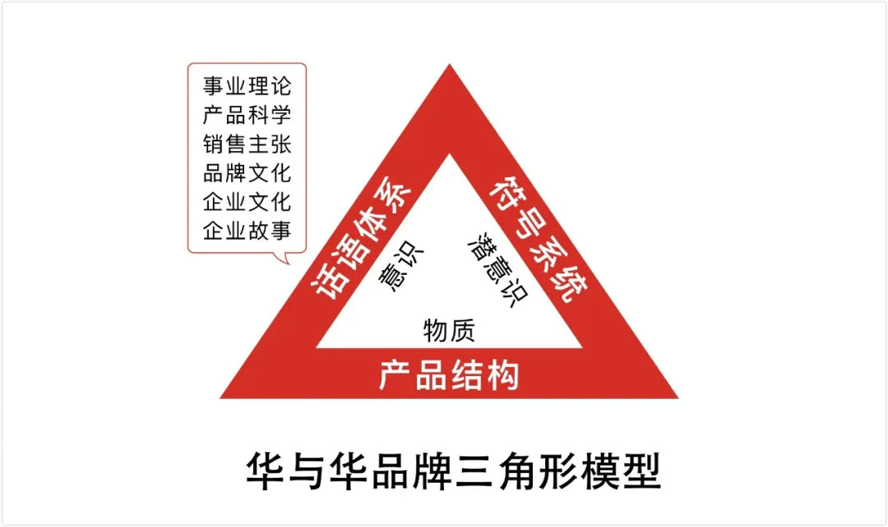
为什么说是最小单元呢？因为他可以化身为经营活动中的一员，状元帽已经戴在了门店600 位门店服务员的头上。
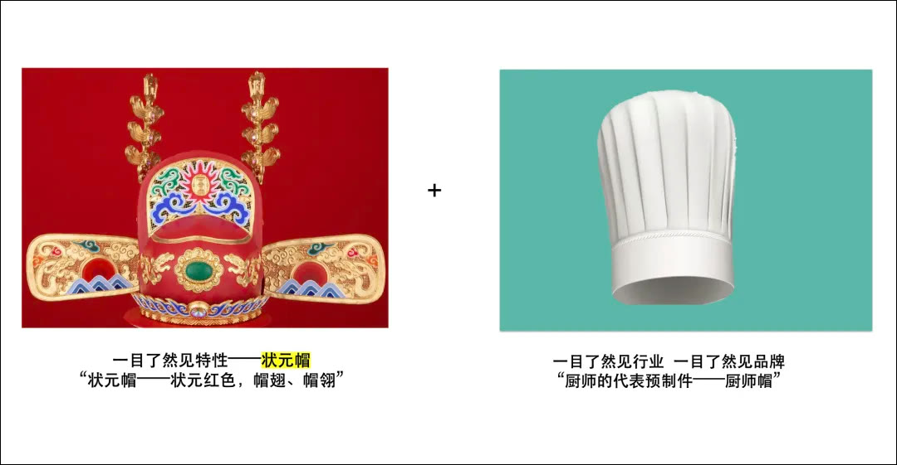
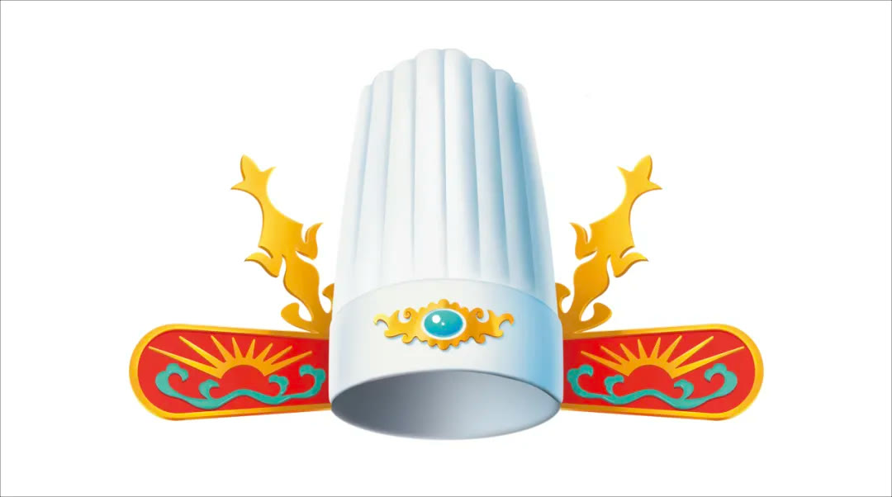
品牌角色是整个品牌形象的核心在所有的超级符号类型中，品牌角色是威力最强的一种，它可以走出画面，真实的到你的生活中，让你摸得到，看得着，实实在在和你面对面沟通。品牌角色不是吉祥物，它是品牌永久的免费代言人,极具识别性的品牌角色能让一个品牌更容易被记住,它可以形成品牌资产，并成为品牌资产的核心。在宋徽厨“状元厨”这一超级角色的设计过程中，我们始终围绕三大核心原则进行创作：
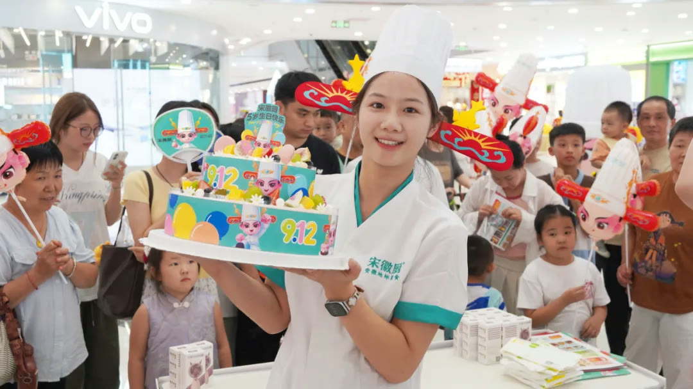
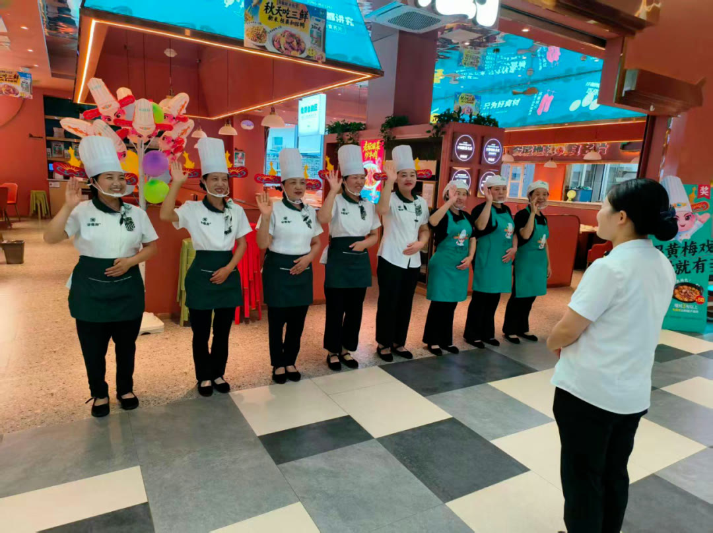
1 ）黄梅戏文化特征明显：头上的帽子装饰有戏曲 “状元帽” 风格的翅翼，配以翎羽，再加上戏曲的面部妆容。2 ）轮廓简单，简单才超级：在设计超级符号的过程中，高度概括的轮廓特征始终是我们考虑的第一要素，在最基本的特征下，可以做到一眼识别，快速的传播、更加容易被记住，被记住就是更加容易选择。3 ) 聚焦眼神，触发沟通：眼睛是心灵的窗户，是触发沟通的关键，在有限的空间内让眼睛最亮眼，最大化。4 ) 世界通用表情，行业属性：全世界通用的代表“好吃”的经典表情，给顾客带来情绪价值，一看就喜欢，一看就开心
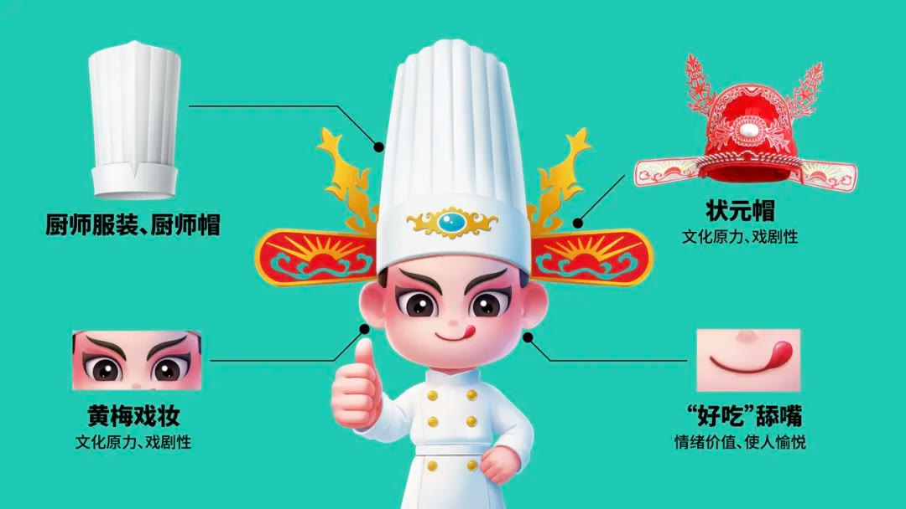
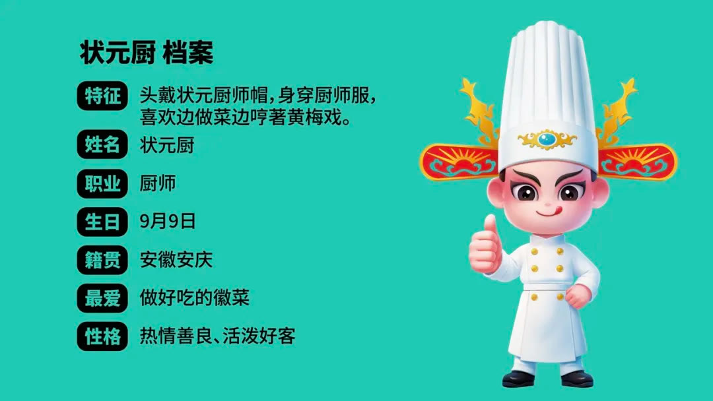
品牌角色最终要应用在各种物料上考虑到实际应用的限制，一个头就能解决问题。从脸型、眼神、嘴巴、表情每个细节经过反复精细打磨，确保形象特征强烈，讨喜又好玩，宋徽厨的超级角色“状元厨”由此诞生。同时在门店，我们把超级符号气模化，让宋徽厨“状元厨”真正先“活起来”，跟每一位小朋友、大朋友进行互动、合影。可爱的“状元厨”如今活跃在宋徽厨的门店内外，热情地向顾客打招呼，与小朋友们亲密互动、合影留念。孩子们远远看见，便欢呼雀跃：“宋徽厨来啦！”门店每日免费派发状元厨气球，更是成为吸引小朋友的快乐源泉。
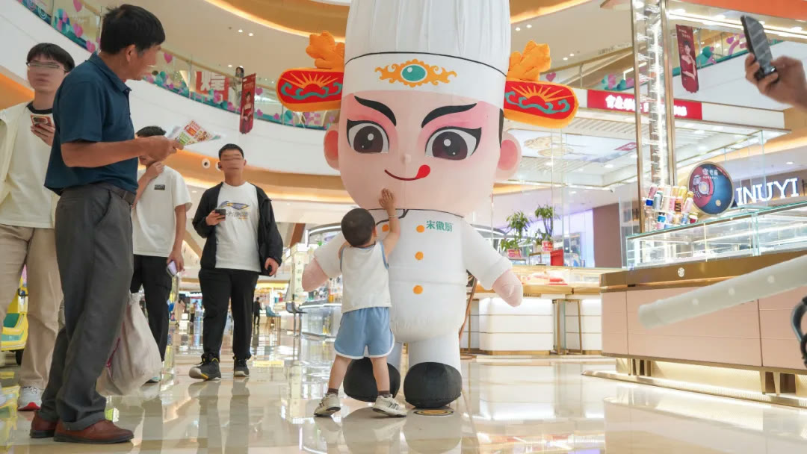
从品牌战略看，这个形象将成为宋徽厨的代言人深入人心，让品牌更加鲜活、易记。哪怕是不识字的小朋友，也会指着它告诉妈妈：“我要去有小状元厨的那家店吃饭！”用话语创造品牌价值，降低传播成本品牌是一套话语体系，说出来的存在，没说出来就不存在！用话语创造品牌价值，降低传播成本，形成购买理由。华与华的创意和设计都不是在办公室里头脑风暴出来的，而是必须去到现场，发现并总结出来的。
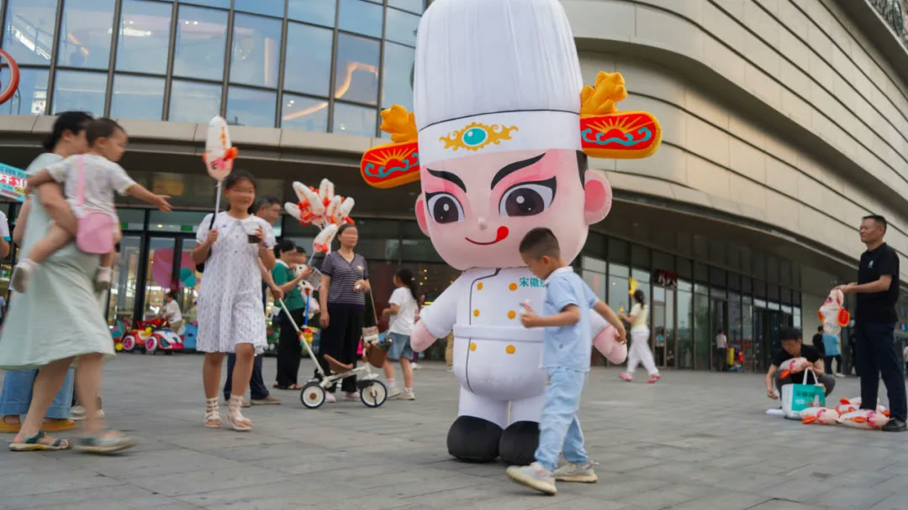
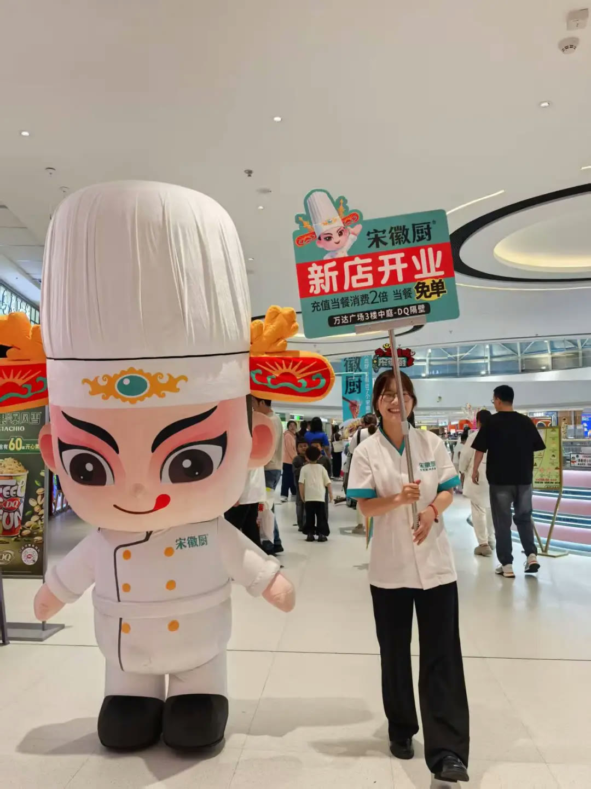
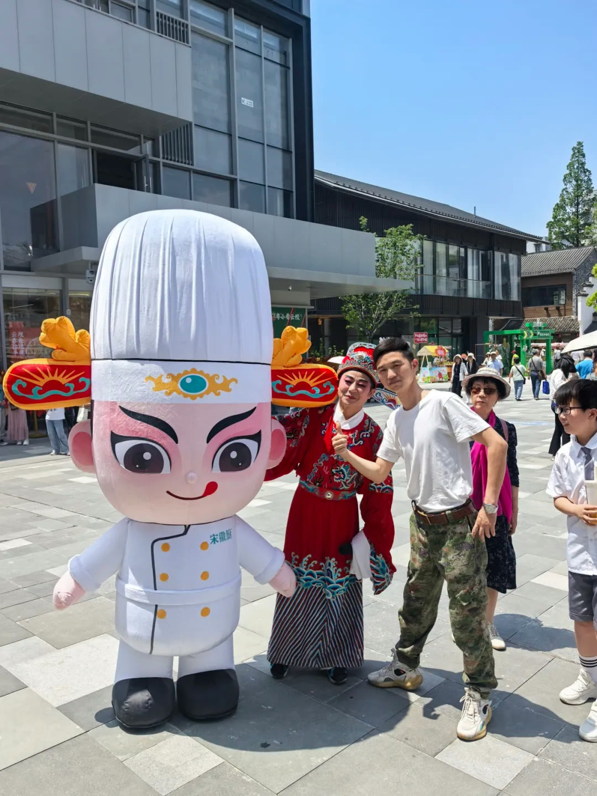
在宋徽厨项目刚开始启动时，我们通过现场观察蹲点、一对一访谈发现，宋徽厨的顾客到店后都具备高度的相似性，就是每一位顾客来宋徽厨就像回家一样愉悦。顾客从进店、点单到用餐结束离店，我们都能看见大多数顾客跟服务员亲切的打招呼。其中我们采访了一位特殊的消费者，在我们连续蹲点的 2 天里都能看到他 1 个人来门店用餐的身影。
经过观察和访谈后发现：这位老人家是从外地来安庆旅游的，因为身体不太好不方便外出，又不擅长，但是这几天就拄着拐杖来宋徽厨吃饭，基本上这几天天天来。他一进门，服务员小姐姐就迎了上去搀扶他，他说很喜欢来宋徽厨，服务员小姐姐会主动给他推荐适合老人家的菜，让他感觉很舒服，菜的味道也不错，吃的也很舒服。华与华项目组在考察期间，不仅蹲点观察，更是化身门店服务员扎根一线，因为对餐饮来说最容易接触客户，更近一步观察顾客的方式就是作为服务员全流程体验。在我们全流程体验过程中，有这样一桌顾客给我们留下的深刻的印象，反复触动项目组。
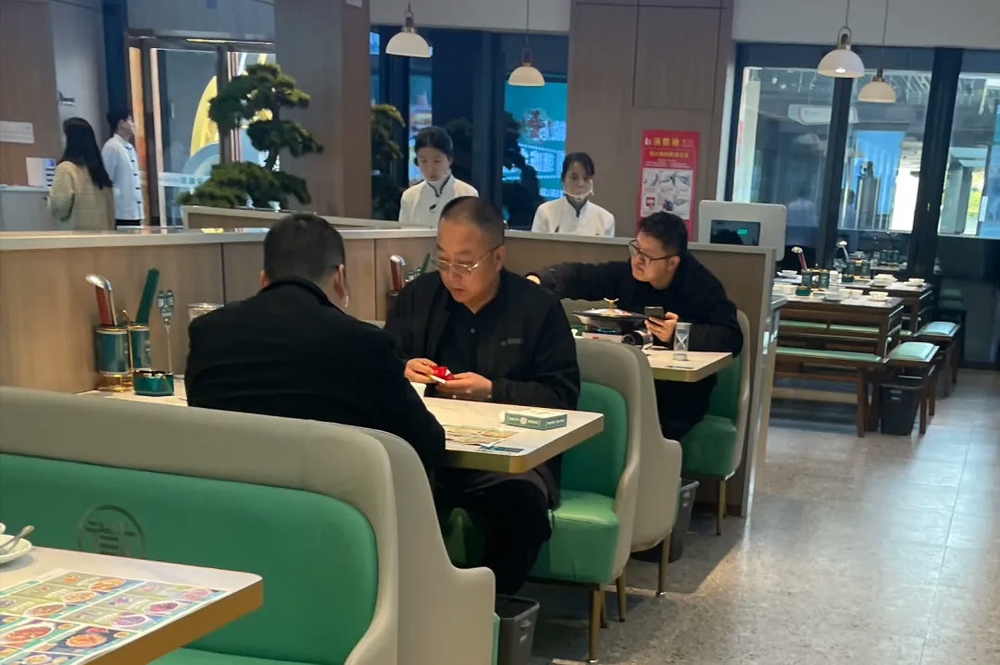
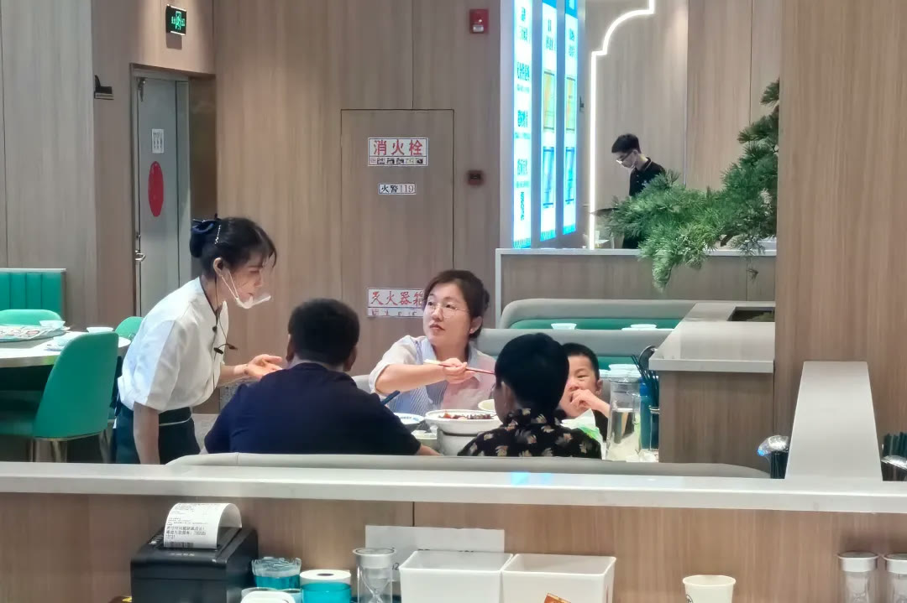
华与华项目组成员在宋徽厨当服务员，考察实际情况
门口一桌客人刚走，我们过去擦桌子，扭头对视上一位阿姨，冲阿姨微笑了一下，继续擦桌子。阿姨拉着门店经理的手微笑着说：“闺女，你们家呀，真是菜好人也好！”现场有神灵。正是通过两次蹲点和服务员体验，我们找到宋徽厨最独特的用户价值：“菜好人也好！”
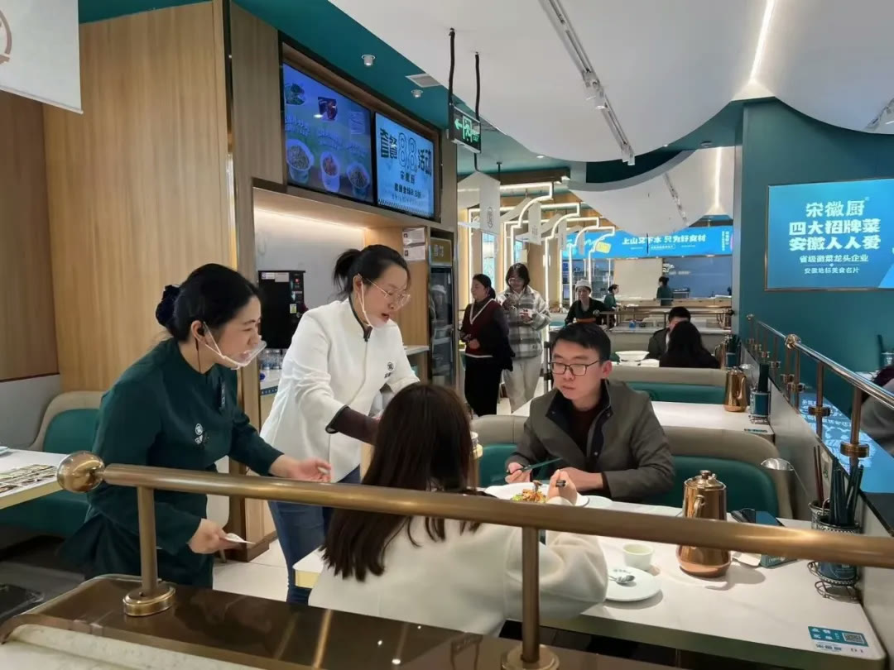
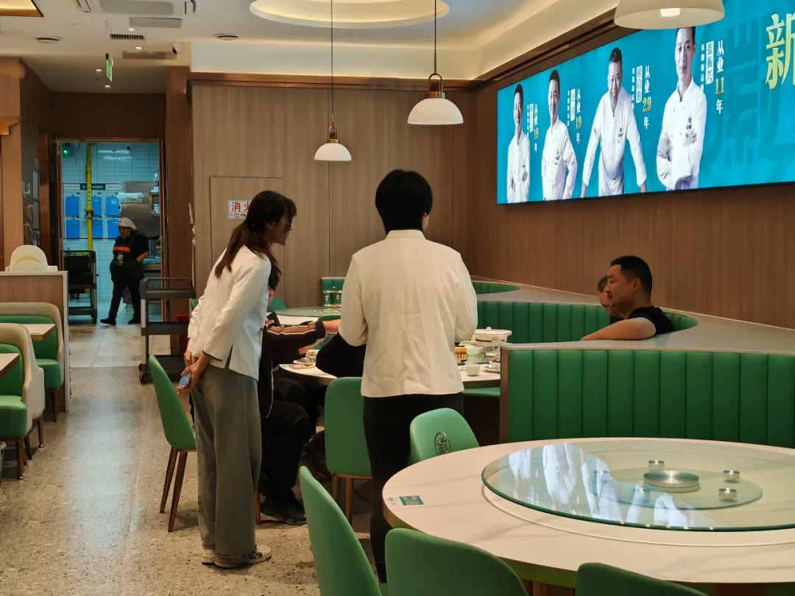
在创作品牌谚语的时候，我们在“菜好人也好”前面，加了 2 个字“安徽”，如果你说“宋徽厨菜好人也好”，这是自卖自夸，别人一听立马就会觉得“你宋徽厨真的菜好吗？人好吗？”而“安徽菜好人也好”，就无可反驳，安徽人认，安徽人骄傲，这就是修辞学，绕开消费者的心理防线，最大化的降低了传播成本。
品牌谚语要有美感，美感就是一种愉悦感“安徽菜好人也好，安徽出了个宋徽厨”也有美感，因为他创造出一种“本地人自豪，外地人欣赏”的愉悦，路过的客人看到了都会忍不住念一遍，回味无穷。
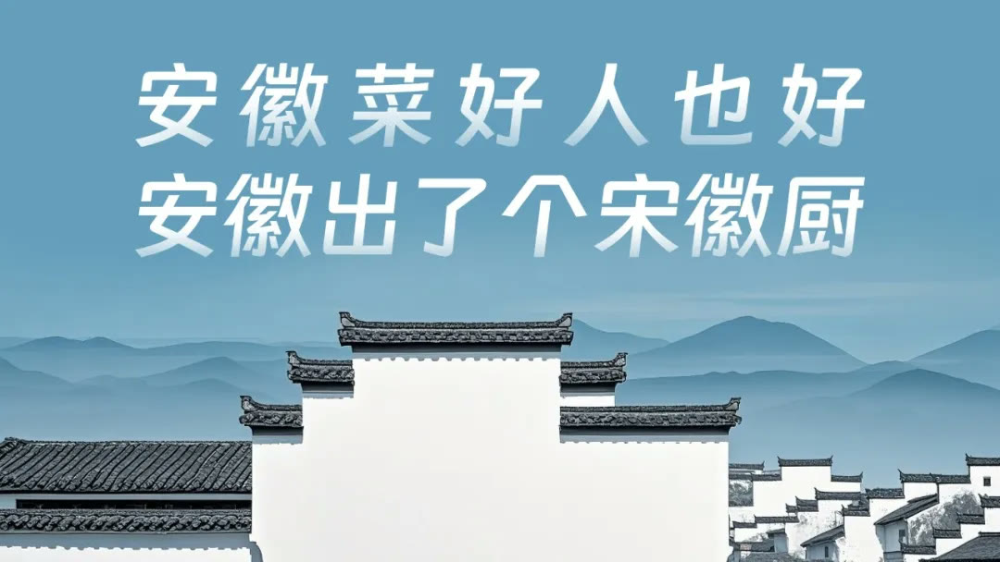
3创意品牌歌曲：“唱着歌就把钱赚了”寻找文化契约、寻找超级符号、品牌歌曲的方法，就是文化母体四部曲：寻找母体、回到母体、成为母体、壮大母体。第一步，寻找母体。对宋徽厨而言，依然还是扎根地域文化！地方文化是独特的地域基因，具有不可移植性。我们认为宋徽厨通过深度绑定黄梅戏，其品牌核心就拥有了天然的、基于地域文化根源的独特性。我们将安徽安庆的非物质文化遗产——黄梅戏曲改编为宋徽厨的品牌歌！用人人熟悉的黄梅戏调子，唤醒大众的集体潜意识，传唱开来！在宋徽厨品牌歌曲的选曲上，我们最终选用了安徽经典黄梅戏《女驸马》选段《为救李郎离家园》的曲调，这个旋律在安徽家喻户晓，在全国也有广泛认知度，曲风欢快活泼，极具感染力：安徽菜好人也好安徽出了个宋徽厨菜也好人也好菜好人好 好哇宋徽厨啊
宋徽厨品牌超级歌曲·《宋徽厨》斯兰原唱华与华1分钟
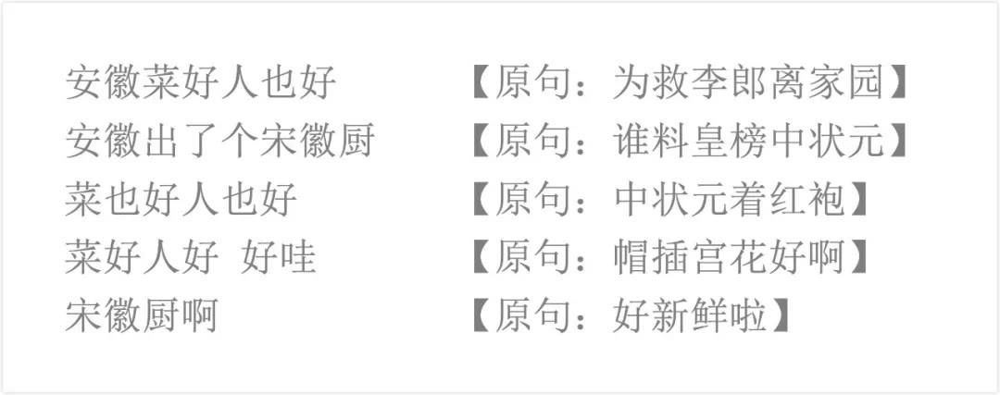
不会唱黄梅戏的服务员不是“好服务员”第二步，回到母体。母体的戏剧，真实日常、循环往复，有它约定俗成的时间、仪式、道具，特点是不可抗拒、必然发生，发生的形式是集体无意识、自发卷入。我们将宋徽厨的品牌歌与招牌菜进行结合，凡是走进任何一家宋徽厨的门店，点了我们的招牌菜老坛酸菜炒牛肉，我们的服务员就会给你唱这段戏，“您好，这是我们的招牌菜老坛酸菜炒牛肉，酸爽脆香好上头，【唱】安徽菜好人也好，安徽出了个宋徽厨！”这样独特的唱戏体验，让顾客直呼“餐饮行业现在太卷了！”对顾客，上菜唱戏，每一次就餐都成了一场“听觉+味觉”的双重安徽之旅，地域特色不再是单薄的标签，而是能被听见、被记住、被反复回味的生动体验。对员工，他们不再是传统的服务员，更是安徽文化的传播使者。一方面，工作本身变得更具趣味与成就感，“唱着歌就把工作干了”，氛围轻松愉悦；另一方面，在日复一日的传唱与演绎中，黄梅戏所承载的乡音乡情也深深激发了他们作为安徽人的文化自信与地域自豪。
这份由内而外的认同与骄傲，转化成为顾客服务时发自内心的真诚笑容与主动关怀。
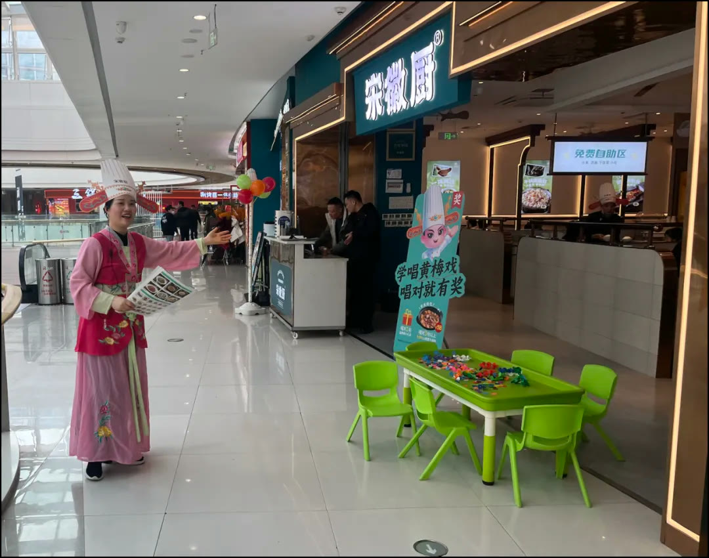
一次爷孙三人开车从武汉出来旅游，爷爷是军人年轻时来安徽出过任务，因为年纪比较大了，就想借着最后一次摸方向盘的机会专门来合肥旅游，从景区一出来询问当地人要去哪吃徽菜，经过阿姨推荐来到宋徽厨，到店后一直在跟店员唠家常分享武汉的特色，店经理当下立即说，“你分享了典故和知识，那我们给你们唱一段安徽安庆的黄梅戏吧！”爷爷主动举起手机拍视频，店经理带着服务员一起唱了 2 遍，爷孙 3 人用餐体验全程都非常开心，临走时跟店经理说“这趟真的是不虚此行，特别是你们唱的那段黄梅戏，不愧是安徽菜好人也好，戏也好！”而宋徽厨，正是凭着这股“文化内卷”的劲儿，唱着戏把生意做火了。“学唱戏就送菜”， 卷动所有的安徽人都唱起来！第三步，壮大母体。我们还为宋徽厨创意了“学唱黄梅戏，免费送菜”活动，凡是顾客到门店吃饭， “学唱黄梅戏”，唱对 3 句能免费送一道菜，卷动所有的安徽人都唱起来！很多安徽的孩子们人生中第一次学唱黄梅戏，大概就是宋徽厨的这一首了，这就是我们说的回到母体、壮大母体，宋徽厨的黄梅戏也在为传扬黄梅戏文化做贡献！
阶段 4
最极简的徽派门头设计
门店作为品牌传播的文化阵地，门头设计也是实现“文化+餐饮”新范式的重要一环。华与华项目组提出开一个店要火一个店，做一个城市要做活一个城市，将每家门店打造为城市文化地标，通过门店空间持续为品牌进行文化投资，构建高势能。
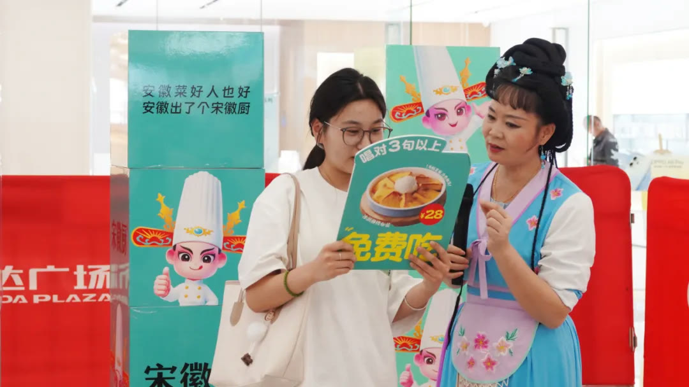
走市场的过程中项目组发现，几乎安徽餐饮品牌都会选择将徽派特色建筑元素——“马头墙”应用到门头上，背后是深刻的文化契合。
徽派文化讲究“雅致内敛”，马头墙的层叠翘角、白墙黛瓦所承载的“清幽、质朴”气质，恰与徽菜“慢食、家常”的消费场景相得益彰。然而，在将这一经典文化符号进行商业化提取与应用时，诸多挑战也随之浮现：传统的复杂造型不仅带来高昂的造价与复杂的结构，也面临着日常清理维护不便、以及受制于各地审批标准等现实难题，严重阻碍了品牌的标准化复制与扩张。宋徽厨在早期门头设计中，也同样受困于此。
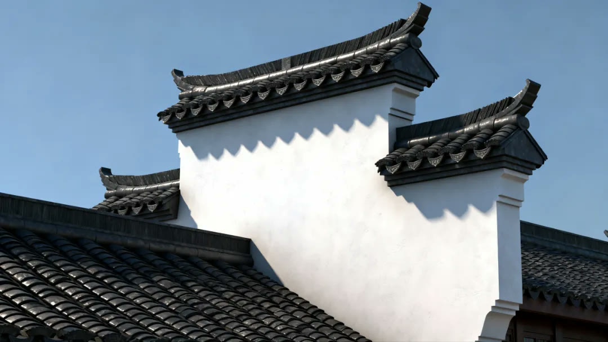
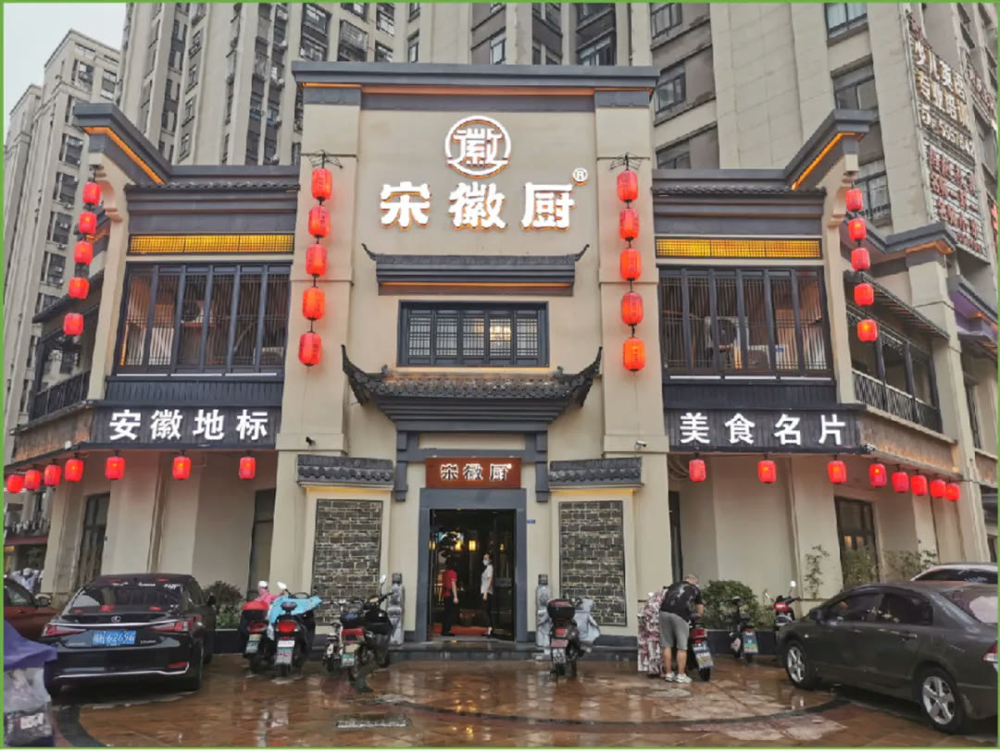
宋徽厨早期门头
华与华认为，招牌是门店生死线，没有被发现一切等于 0 。在为宋徽厨设计门头时，作为文化接触的第一触点，我们秉持两大核心策略：1 、是将门头视为品牌的文化投资，构建强大势能，提升发现感与进店率；2 、更标准化，便于快速复制扩张，做“简”，做成预制件，标准好实施。
华与华为宋徽厨设计的极简门头
宋徽厨门头设计的6大机关
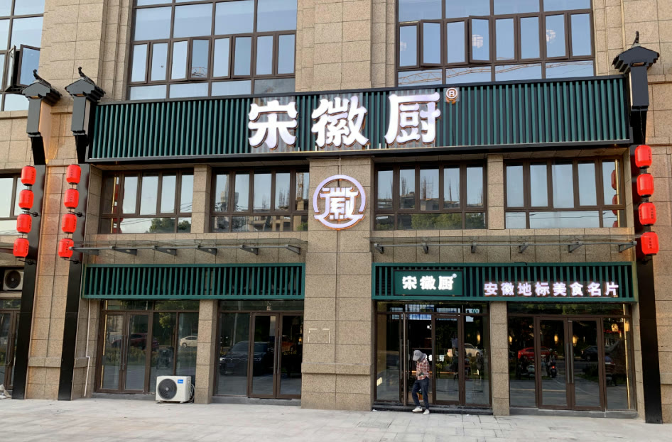
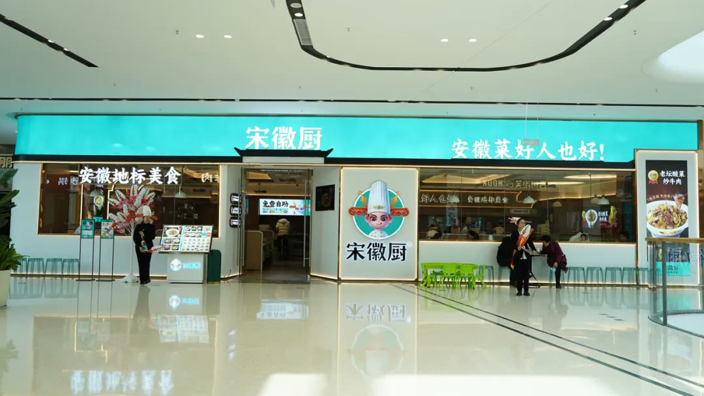
机关 1
徽派建筑元素极简化
我们抽取提炼“马头墙”元素，简化为“一”字型，保留徽派建筑识别特征。简化后的黑色马头墙门头既强化视觉焦点，又传递品牌对徽菜工艺“厚重扎实”的追求。
机关 2
增强门店通透性
店外一眼看到店内用餐场景，吸引顾客进店。
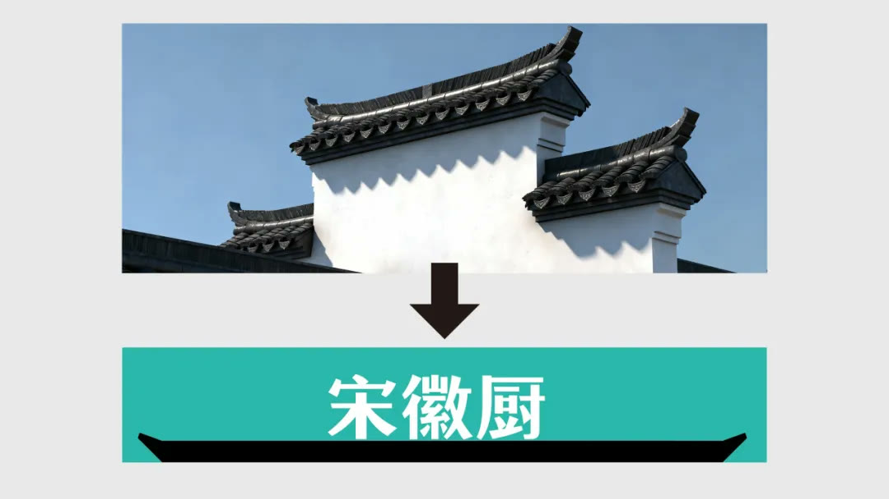
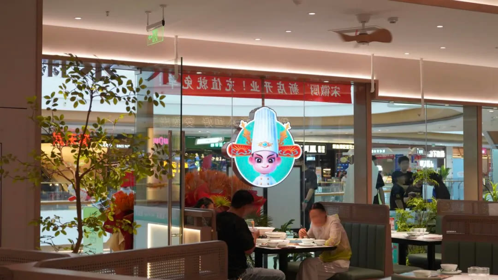
机关 3
色彩对比提高发现感
品牌根植地域文化，选取徽州文化的典型代表色“天青色”。蓝色和白色对比显眼，白天和晚上都能提高发现感，让门店从街道的同质化竞争中跳脱出来。
机关 4
品牌话语上门头，老远来招客
机关 5
超级符号上门头，顾客进店不用愁
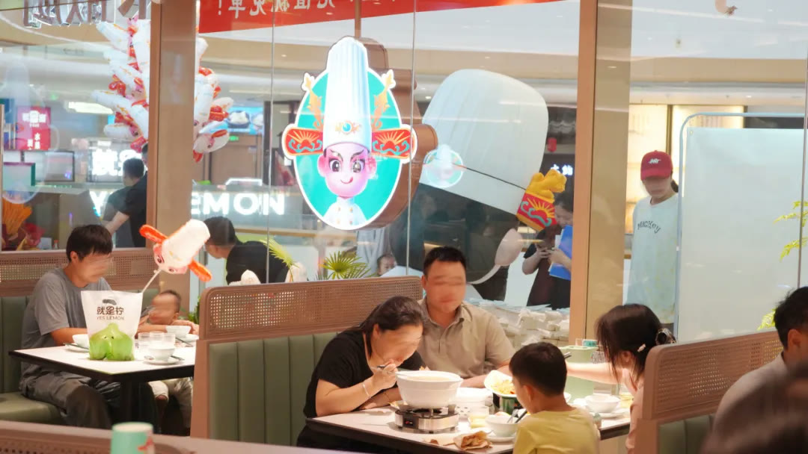
机关 6
门店电视吸引店外顾客驻足
黑色马头墙的“传统厚重”与天青色背景的“现代雅致”形成对比，既锚定徽菜基因，又在文化传承与商业传播之间取得平衡。
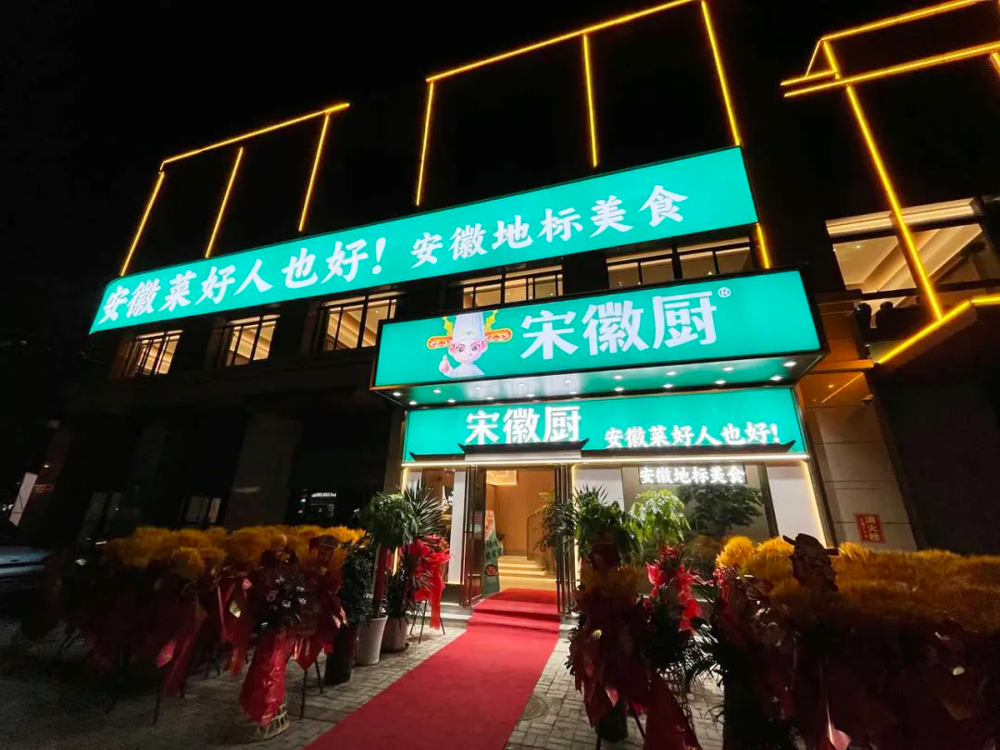
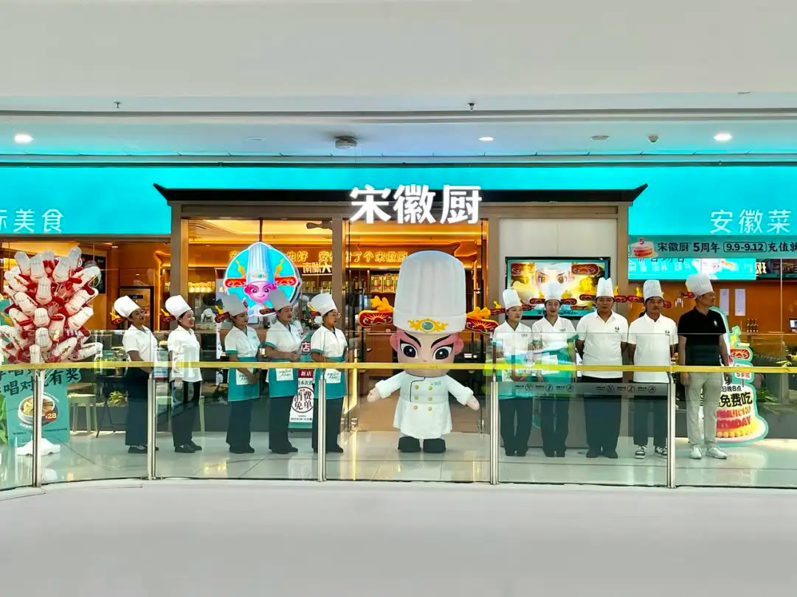
阶段 5
品牌文化与企业文化内外一体
华与华认为，企业文化是企业成功经验的高度凝练，是企业经营的底层逻辑，是全员对企业如何经营达成的共识，品牌文化与企业文化内外一体。口号不只是口号，是一整套经营的逻辑和方略，特别是企业自己的行动。当我们喊出一个口号，不仅是因为我们认为这个口号有传播效率和打动力，而是与顾客立约，承诺我们会像我们的口号那样工作。改变口号，就是改变行动纲领，不是营销传播问题，是价值问题。对外“安徽菜好人也好”是我们的传播口号，对内要化为我们的核心价值观，就是 6 个字：“做好人 做好菜”，连创始人宋总都直言“当初没想到这句话的威摄力这么强！”
要落地“安徽菜好人也好”，具体到每一个门店，我们将企业文化核心理念，具体化为门店运营的三大核心行动：1 ）做好人：对伙伴，来到宋徽厨，就是一家人，一家人帮着干所有的事，师徒制，老带新，让宋徽厨成为伙伴们实现梦想的平台；对顾客，像在家里招待亲朋好友一样真心做好每一道菜和服务。2 ）做好菜：严选好食材，明厨亮灶、大厨现炒，坚持"好吃不贵"，传承创新徽菜。3 ）唱好戏：用黄梅戏传递快乐，传播安徽文化。
每个季度还要召开“做好人 做好菜”的季度大会，评选宋徽厨的“好人之星”“好菜之星”“好戏之星”对门店一线做得好的员工给予荣誉和真金白银的双重奖励。
同时，对内的文化行动还体现在“一家人帮着干所有的事”，解决了门店组织管理的大难题，在过去，门店管理常受限于“前厅经理管服务，后厨厨师长管出品”的传统分工，协作效率低下。
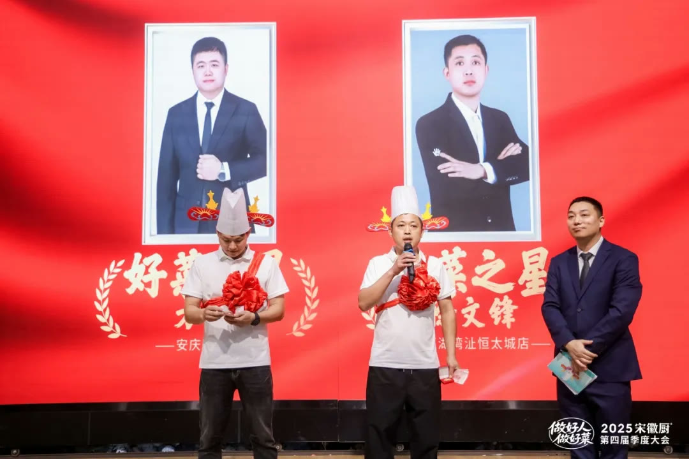
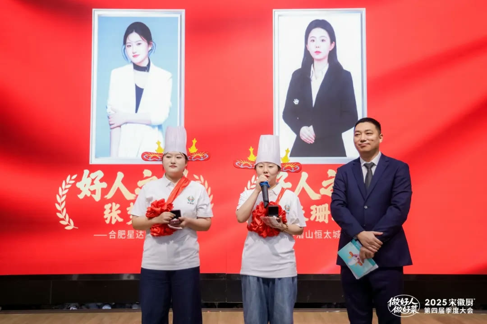
自从宣导和要求“一家人帮着干所有的事”之后，员工行为发生了根本性转变，前厅的服务员早上来了会提前帮助后厨备菜，负责做饮料、果盘的大姐，空隙会随时补位去煮饭，忙的时候去上菜等等，做到了“所有人做所有事”，也带来了 2 大成果：第一，平均为每家店节约了 2 个人力成本。这使得我们在不增加运营负担的前提下，能够将更多资源用于回馈顾客，持续践行“好吃不贵”的承诺，为顾客提供更平价的美食。第二，解决了前厅和后厨的组织管理难题，配合更默契，更一体化了。
企业文化其实也是一种重复的对内宣传机制，和对外的营销传播本质上是一样的。新的员工进来，首先就让他们学唱戏，用唱的方式先记住做好人、做好菜，也就加快了企业文化渗透、建设的速度。宋徽厨致力于成为每一位伙伴实现梦想的平台，价值观不是空洞的口号，而是行动的指南，宋徽厨将“好人好菜”理念转化为具体行动，带来切实改变。
案例总结
华与华与宋徽厨的合作，深刻诠释了如何将地域文化，转化为品牌的核心竞争力和增长引擎，实现了品牌差异化的高维竞争。1 、通过“状元厨”超级符号的视觉占领、黄梅戏品牌歌曲的听觉洗练、“唱戏上菜”的独特仪式体验，以及深植于组织血脉的“做好人 做好菜 唱好戏”文化，构建了强大的品牌壁垒。2 、用一句话“安徽菜好人也好 安徽出了个宋徽厨”统领内外，对外降低营销传播成本，对内做好人做好菜，降低了内部经营管理成本！
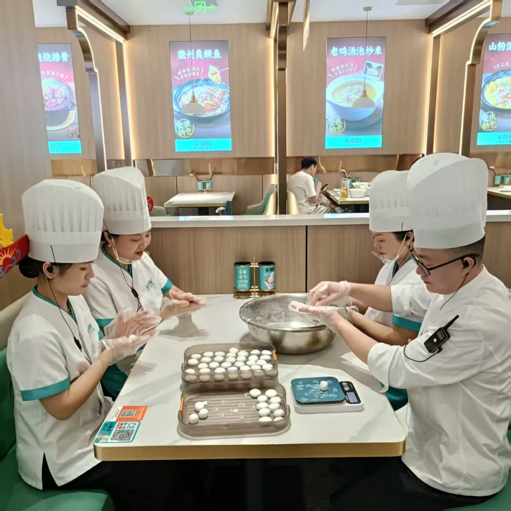
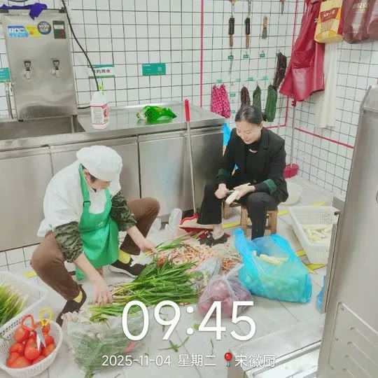
3 、最极简的徽派门头设计，将复杂厚重的马头墙元素简化为“一”字，黑色马头墙的“传统厚重” 与天青色背景的 “现代雅致” 形成强烈对比，锚定了品牌的徽菜基因。宋徽厨与华与华合作 2 年内实现营收提升 25 . 25 %，宋徽厨的成功，是文化赋能品牌、战略引导经营、组织支撑执行三者协同的结果，不仅成为安徽地域文化的餐饮代言人，更通过系统化的品牌建设与内部文化渗透，实现了从“生意成功”到“品牌长久”。